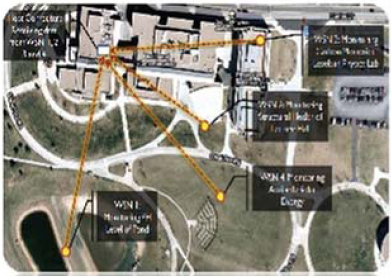
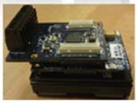
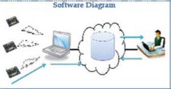
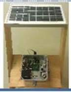
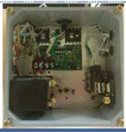

College of Integrated Science and Technology Senior Thesis
Wireless Sensor Network
The Autonomous Solutions for Large Scale Research
Jordan Barker & Cyril Thornton
What is a Wireless Sensor Network?
"Consists of spatially distributed autonomous sensors to
cooperatively monitor physical or environmental conditions"
-Wikipedia

The figure above depicts an example of what a Wireless Sensor Network (WSN) is capable of.

The WSN consists of a group of Wireless 'Nodes (shown right) that all relay data to the main 'Host.'
A group of nodes form a Wireless Sensor Network.
PROJECT GOAL
"Combine our collegiate focuses of Telecommunications,
Energy and Instrumentation & Measurement to cohesively
forge an efficient alternative for large scale data collection
and analysis"
PROJECT COMPONENTS
Software
Embelied Systems Design
Gateway Client Application
Server Management
Database Design
Hardware
Casing and External Connecters
Power Management and Regulation
External Sensors
Implementation
Combining Hardware and Software
Pilot Study 1
Pilot Study 2
Jordan Barker & Cyril Thornton Advisor: Dr. Emil H. Salib


